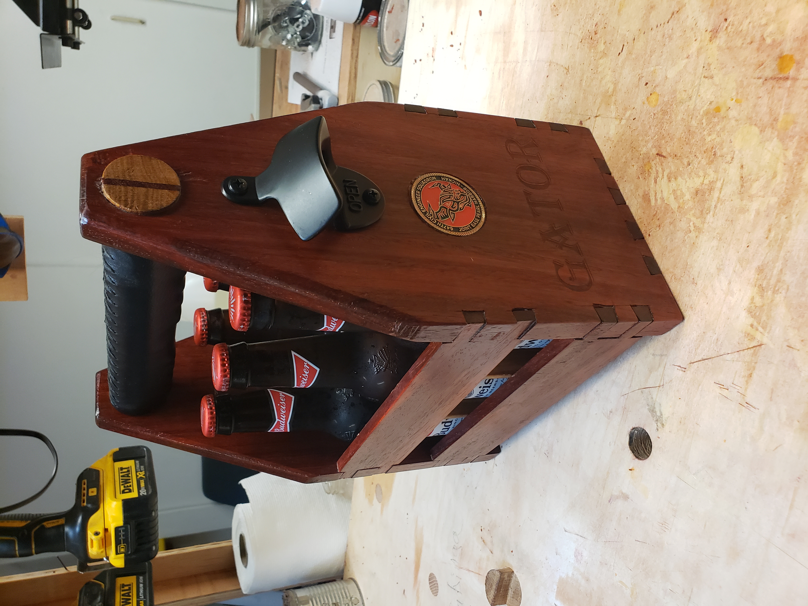

Sometimes when 3D printing, things can go bad if the printer is left unattended, as seen in this picture of a recent print failure that I had:

So when that happens, I like to shift my focus to another one of my hobbies, which is woodworking!
My name is Wynn Hartson and live in Hawaii! One of my hobbies is 3D prinitng. You can find a lot of STL files for free use on the thingiverse website, located here:
thingiverse.com
Sometimes when 3D printing, things can go bad if the printer is left unattended,
as seen in this picture of a recent print failure that I had:
So when that happens, I like to shift my focus to another one of my hobbies, which is woodworking!
I have been interested in woodworking since I took a shop clas in my junior year of high school. One of my favorite woodworkers on youtube is Paul Sellers. I can really relate to his love of hand tools. I recently made this for a colleuge that changed duty stations after watching a video on Matt Estleas channel.
giftAnother hobby of mine is exploring this wonderful island of Oahu that I live on! and what a better way to do that than in this beautiful orange truck that I have!